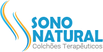

Marca, negócio e comunicação alinhados, na prática.
Uma seleção dos trabalhos mais recentes. Em cada case, a estratégia, as peças e o processo em detalhe.
Construção de marca · OmniMap
A Data Signage começou como sinalização digital e cresceu com a demanda do mercado, até ler comportamento nos pontos de venda com câmeras e IA. Fomos chamados para aplicar a metodologia VBRA e participamos também do novo plano de negócios. O resultado é a OmniMap, do primeiro nome testado ao guia final, hoje em implantação.
Ver o case completo →Rebranding · Liberum Ratings
Uma das maiores agências de avaliação de risco de crédito do país precisava de reposicionamento. Fizemos o rebranding em 2023 e assumimos a gestão da marca: redes sociais, newsletters, conteúdo e SEO, campanhas, eventos, vídeos e o Liberum Intelligence, podcast criado pela VBRA.
Ver o case completo →Branding de produto · Liberum Science
A plataforma da Liberum Ratings que aplica inteligência de dados ao mercado de capitais. Participamos da criação da plataforma, adequando tudo ao novo branding, e fizemos a identidade, as submarcas University, Risk e Analytics, o site, o manifesto e as campanhas de lançamento.
Ver o case completo →
Construção de marca · Vai q AI
Vai q AI nasceu como experimentação com inteligência artificial generativa e virou marca autoral de conteúdo. Construímos uma linguagem visual e narrativa própria, testada peça a peça nas redes até se tornar reconhecível. Em 15 meses, o perfil saiu de 30 para 13,7 mil seguidores, hoje com crescimento 100% orgânico.
Ver o case completo →Rebranding · Clínica Wells
Clínica de transplante capilar de alta performance, com técnica e tecnologia de ponta, mas com uma marca sem posicionamento e uma comunicação tímida. Em seis meses, da estratégia à implantação, construímos a plataforma de marca, a nova identidade visual e o site.
Ver o case completo →Branding · Will Móvel Service
Marcenaria e serviços de manutenção para residências e empresas, em Ribeirão Preto. Construímos a marca do zero, do nome ao manual: um W que é o emblema do herói que chega para resolver.
Ver o case completo →Construção de marca · SOMA
Saúde integrativa ortomolecular e autoconhecimento, em São Paulo. Do plano de mercado ao lançamento comercial, criamos o nome, a plataforma e a identidade da marca-mãe e organizamos a arquitetura para os seus produtos.
Ver o case completo →
Branding · Sono Natural
Colchões terapêuticos, uma marca SOMA. Do naming ao posicionamento, entregamos identidade, kit de vendas, site e uma campanha digital completa, incluindo a implantação das redes sociais da marca do zero.
Ver o case completo →Naming e rebranding · Autness
Consultoria de IA autônoma. Criamos o nome quando a empresa nasceu para automatizar treinamentos e processos e, com a chegada da IA, refizemos a marca para entregar crescimento com IA e pessoas.
Ver o case completo →Sua marca pode ser o próximo case
Conte o desafio da sua marca e a gente mostra o caminho, da estratégia à última peça.